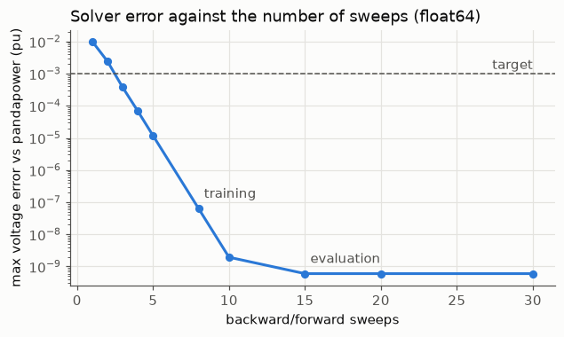

01 Network and differentiable solver#
The plant in every experiment is the IEEE 33-bus radial feeder (Baran and Wu, 1989, as case33bw in pandapower), solved
with branch-flow DistFlow by a fixed number of backward/forward sweeps written in PyTorch, so that gradients pass through
the solver. Bus 0 is the substation (slack), all quantities are per unit, and a discharging battery (P > 0) reduces the
net consumption at its bus.
This page shows the check of the solver against pandapower’s AC power flow. The pre-set target was a voltage error below 0.001 pu.
Read these results with the following caveats
Preliminary, validation part only. The test part is sealed and has not been evaluated. Every number comes from one network (IEEE 33-bus) and from the validation part, which was also used to select the DPC policy, so the DPC numbers are optimistically biased.
Data. Solar (Utrecht, 2014-2017) and load (Portugal, 2012-2014) are real measurements, but they come from different places and years and share no real weather. The PV size of 3.9 MW was chosen after a no-control check on the training part only (at 2.6 MW no training step exceeded 1.05 pu).
RQ2 was reworded on 2026-11-04, before any controller existed, because extreme ramps and voltage violations rarely coincide in this data (see Decisions).
Training bias. 30% of the training windows contain an extreme solar ramp.
Differences from the proposal’s eq. (16). Degradation and C-rate terms are off in every variant (“degradation off”). A terminal SoC term with a 30-70% dead zone is added and is not in eq. (16).
The safety layer goes beyond the proposal: it also limits P by the stored energy (SoC kept within 10-90%), not only by the inverter limits of eqs. (4)-(7). It does not guarantee voltage feasibility.
Active power use is marginal and not seed-robust. Voltage is regulated mostly with reactive power Q; the selected policy passes the pre-specified “P is used” threshold on 1 of 3 seeds.
The MPC baseline is a convex LinDistFlow MPC with soft voltage limits and a lossless SoC model, not the AC-OPF MPC named in the proposal, and it was not tuned. Speed comparisons are therefore against a convex MPC. The oracle MPC uses exact future data and is an upper bound, not a real controller.
Ablations. “penalty-only” includes a soft inverter-limit penalty that was added on purpose (decision D1). Variants without the safety layer can break the inverter limits; such steps are physically impossible operation and are reported as shares, not as achievable performance.
Corrections to the proposal: a discharging battery enters the net load with a minus sign, and the left side of eq. (9) is P, not 2P. Results computed before the SoC energy limit was added (2026-11-05) are superseded and not shown.
Source: results/m1_validation.json
Random load cases: 200, seed 0, sweeps per solve: 15, target: 0.001 pu. Versions: python 3.14.0, torch 2.15.0+cpu, numpy 2.4.6, pandapower 3.5.6.
Error against pandapower#
| quantity | value |
|---|---|
| max voltage error, float32 (pu) | 8.59e-08 |
| max voltage error, float64 (pu) | 5.99e-10 |
| mean voltage error, float32 (pu) | 1.67e-08 |
| max loss error, float32 (pu) | 5.49e-09 |
| max slack active power error, float32 (pu) | 5.36e-08 |
| max slack reactive power error, float32 (pu) | 4.85e-08 |
| below the 0.001 pu target | yes |
Named operating points#
Voltages and losses from the differentiable solver, and its largest voltage difference to pandapower.
| case | V min (pu) | at bus | V max (pu) | losses (kW) | max |ΔV| float32 | max |ΔV| float64 |
|---|---|---|---|---|---|---|
| nominal load | 0.9131 | 17 | 1.0000 | 202.7 | 3.09e-08 | 2.11e-15 |
| load x0.5 | 0.9583 | 17 | 1.0000 | 47.1 | 4.06e-08 | 5.10e-12 |
| load x1.5 | 0.8634 | 17 | 1.0000 | 496.4 | 5.26e-08 | 1.47e-13 |
| BESS discharge | 0.9415 | 31 | 1.0000 | 121.3 | 3.87e-08 | 4.33e-15 |
| BESS charge | 0.8495 | 17 | 1.0000 | 401.4 | 4.79e-08 | 1.96e-13 |
| PV + BESS | 0.9604 | 32 | 1.0000 | 68.2 | 3.55e-08 | 3.27e-11 |
| reverse flow (PV > load) | 0.9997 | 21 | 1.0909 | 221.7 | 6.66e-08 | 1.02e-14 |
How many sweeps are needed#
Training uses 8 sweeps per solve (cheaper backpropagation) and evaluation uses 15.

Without control at the nominal case33bw load, 21 buses are below 0.95 pu. This is why the base scenario scales the load by 0.7 (chosen before any time series or controller result was seen).